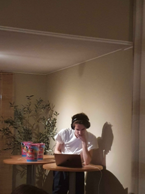
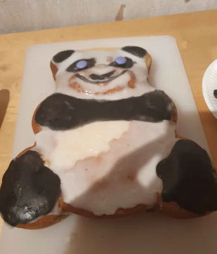
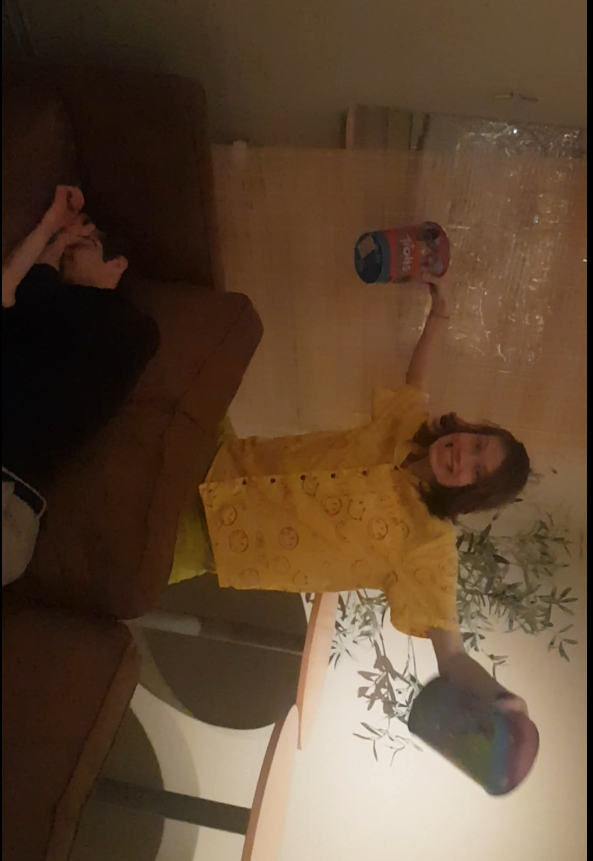
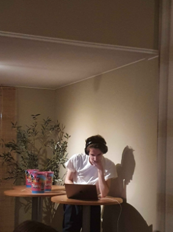
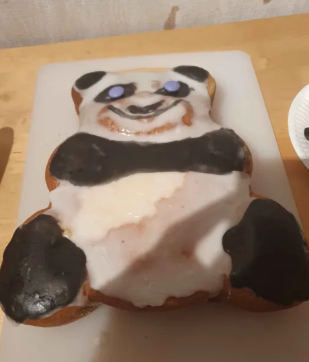
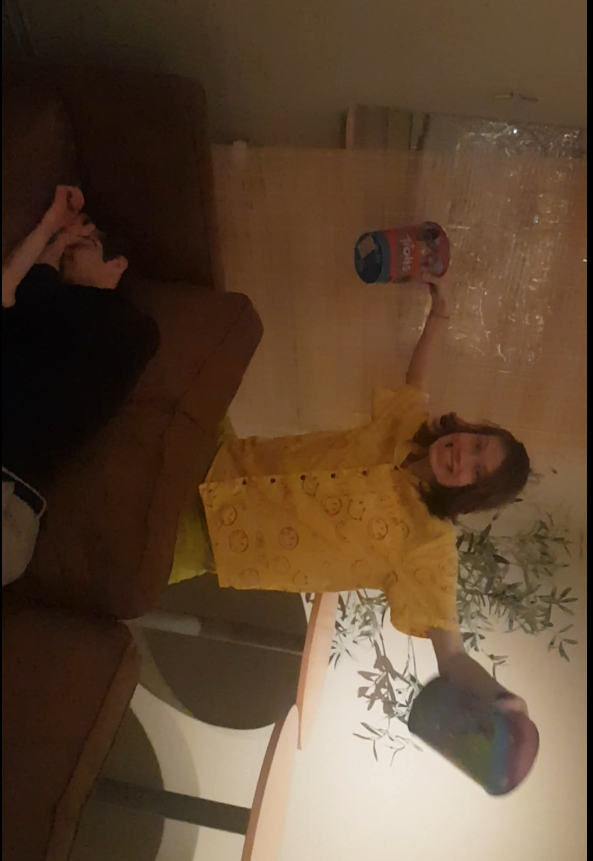
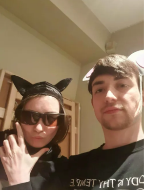
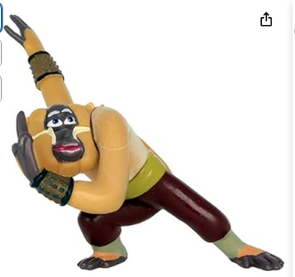

2024 var det första året där Kung Fu Påska hålldes på den stora skalan som folk är vana vid i modern tid. Det var den första gången som fästen hölldes i en stor lokal och inkluderade över 20 pers. Det var även den första gången den årliga tävligen THE KUNG FU PÅSKA EXTRAVAGANT CHARACTER TRIBUTE CHALLENGE hålldes.
Temat för KFP 2024 var Kung fu Panda 4, som visades på bio runt denna tid. Ett rekordstort gäng träffades tillsammans på biografen tillsammans och efter det så reste vi tillsammans till festloken där tävlingen började. Detta var den första gången TKFPECTC hålldes och oj vilken tävlig det blev.
Nils1 var utklädd till Oogway som var på besök från spirit world och svarade på frågor. Både GB och Yankee Jim producerade musikvideos om sina favorit karaktärer som ni kan se nedan. Ebbsod överasskade med ett hemgjort "Vem där" spel där ansiktena hade byts ut med kompisar. Skimmer och Krypto tog med bakvärk som var formade som pandor. David gjorde en politisk propaganda video som han cookade up medan festen utspelade sig. Måns höll i en powerpoint där han förklarade Kung Fu Panda 4s story trots att han själv inte såg filmen. Ruben och Idun höll en av sina legendariska sten-sax-påse tävlingar som höll på i över ett år.
 





3dje plats: Nils2 döck upp som Lord Shen och höll i en stor tävling i sin egna ära. Alla blev indelade i olika lag och fick skicka ut sina champions till olika sorts grenar med olika styrkor. Den extremt stora ambitionen på det här enorma bidraget landade Nils2 en plats på prispallen.
2da plats: Tom och Iduns bidrag var en tävling där alla deltagare delas in i lag för att laga de bästa nudlarna. Bästa laget ska få ta över Mr Pings nudelresturang nu när Po har blivit drakkrigaren. Denna tävling överaskade alla med sin charm och det kreativa sättet den fick alla att delta. Det var tillräckligt för att nå en andraplats.
1a plats: Årets vinnare var inga mindre än syskonen Aron Schacko och Elsa Wiberg. En musikal teaterpjäs som visar med en ny spin berättelsen om hur Påsken blev till, fast med Kung fu Panda karaktärer i huvudrollerna. Avslutades med ett överasknings segment av the Smed awards från "Feast of Smeden". Detta smarta och roliga uppträdandet träffade mitt i prick och fick direkt eloger från hela publiken. Detta betyder att dessa 3 vinnare fick ta hem årets Monkey trofe!
 